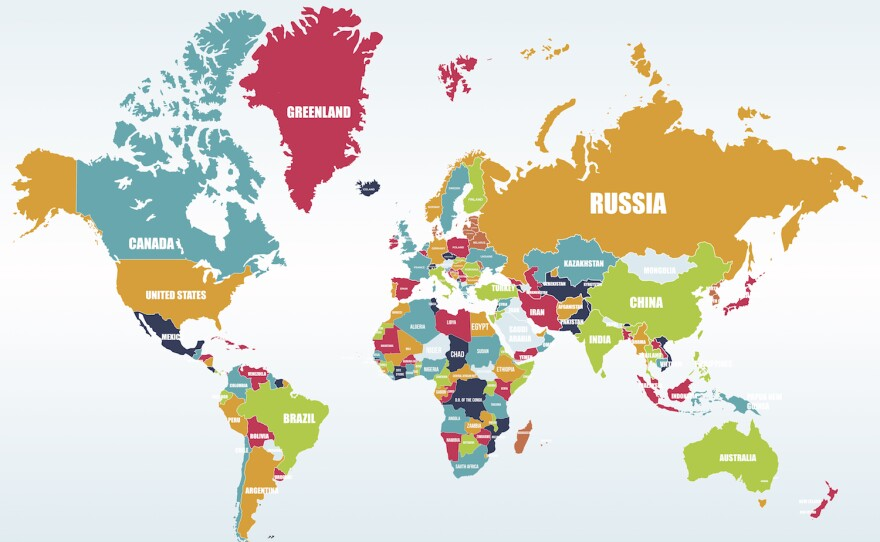

<div class="counties">
	
	<div class="counties_text">
		There are 195 different countries in the world, and this number seems to be ever increasing. While some countries are in fact small towns with few residents, other countries are so large they can be homes to snow and sunny weather at the same time.
		Top six largest countries in the world account for nearly half of all the land in the world, so they never cease to inspire with their geography, as well as animal and plant diversity.
	</div>
</div>